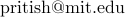
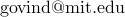
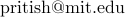
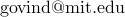

Algorithms & Complexity Seminar, MIT : 2017-18
Organizers: Akshay Degwekar ( ), Pritish Kamath (), Govind Ramnarayan ()
), Pritish Kamath (), Govind Ramnarayan ()
The Algorithms & Complexity Seminar for the 2017-18 year will usually (unless otherwise stated) meet on Wednesdays 4pm-5pm in 32-G575 (Theory Lab on the 5th floor of the Stata Center). The style and format of these meetings are variable. Please feel free to contact the organizers to find out more details. To receive announcements of upcoming talks, subscribe to the mailing list by either visiting the mailman page or send an empty email to compalgsem-subscribe@lists.csail.mit.edu.
Past Talks
-
Wednesday, September 6, 2017: Dor Minzer (Tel Aviv University).
Topic. An approach for 2-to-1 Games Conjecture via expansion on the Grassmann GraphAbstract. The PCP theorem characterizes the computational class NP, so as to allow proving approximation problems are NP-hard.
One of the fundamental open questions in PCP theory is whether a special type of PCP, namely 2-to-1 Games, is still NP-hard. This conjecture is a variant of Khot's well-known Unique Games conjecture.
A recent line of study suggests a new attack on the 2-to-1 games conjecture (albeit with imperfect completeness). This approach is based on a mathematical object called the Grassmann Graph, and relies on an unproven combinatorial hypothesis on it. This, in turn, leads to the study of edge expansion in this graph. More specifically, to the study of sets of vertices in the Grassmann Graph, whose edge expansion is not optimal.
It turns out that the study of the combinatiral hypothesis is in fact equivalent to the study of edge expansion (Barak Kothari). Thus extending these results would complete the approach, proving that distinguishing between 2-to-1 games with close to 1 value, and 2-to-1 games with arbitrarily small value, is NP-hard.
This talk discusses this line of study.
Based on joint works with Irit Dinur, Subhash Khot, Guy Kindler and Muli Safra. -
Wednesday, September 27, 2017: Paul Hand (Rice U.). [Room: 32-D463 (Star)]
Topic. Deep Compressed SensingAbstract. Combining principles of compressed sensing with deep neural network-based generative image priors has recently been empirically shown to require 10X fewer measurements than traditional compressed sensing in certain scenarios. As deep generative priors (such as those obtained via generative adversarial training) improve, analogous improvements in the performance of compressed sensing and other inverse problems may be realized across the imaging sciences.
In joint work with Vladislav Voroninski, we provide a theoretical framework for studying inverse problems subject to deep generative priors. In particular, we prove that with high probability, the non-convex empirical risk objective for enforcing random deep generative priors subject to compressive random linear observations of the last layer of the generator has no spurious local minima, and that for a fixed network depth, these guarantees hold at order-optimal sample complexity. -
Thursday, September 28, 2017: Yuval Dagan (Technion). [Time: 3-4pm]
Topic. Trading information complexity for errorAbstract. We consider the standard two-party communication model. The central problem studied in this article is how much one can save in information complexity by allowing an error. Our major result is that the $\varepsilon$-error randomized communication complexity of set disjointness is $n[C_{\mathrm{DISJ}} - \Theta(h(\varepsilon))] + o(n)$, where $C_{\mathrm{DISJ}} \approx 0.4827$ is the constant of set disjointness found by Braverman et al.
Joint work with Yuval Filmus, Hamed Hatami and Yaqiao Li. -
Wednesday, October 11, 2017: Lijie Chen (MIT).
Topic. On The Power of Statistical Zero KnowledgeAbstract. We examine the power of statistical zero knowledge proofs (captured by the complexity class $\mathsf{SZK}$) and their variants. First, we give the strongest known relativized evidence that $\mathsf{SZK}$ contains hard problems, by exhibiting an oracle relative to which $\mathsf{SZK}$ (indeed, even $\mathsf{NISZK}$) is not contained in the class $\mathsf{UPP}$, containing those problems solvable by randomized algorithms with unbounded error. This answers an open question of Watrous from 2002 [Aar]. Second, we "lift" this oracle separation to the setting of communication complexity, thereby answering a question of Goos et al. (ICALP 2016). Third, we give relativized evidence that perfect zero knowledge proofs (captured by the class $\mathsf{PZK}$) are weaker than general zero knowledge proofs. Specifically, we exhibit oracles relative to which $\mathsf{SZK}$ does not belong to $\mathsf{PZK}$, $\mathsf{NISZK}$ does not belong to $\mathsf{NIPZK}$, and $\mathsf{PZK}$ is not equal to $\mathsf{coPZK}$. The first of these results answers a question raised in 1991 by Aiello and Hastad (Information and Computation), and the second answers a question of Lovett and Zhang (2016). We also describe additional applications of these results outside of structural complexity.
The technical core of our results is a stronger hardness amplification theorem for approximate degree, which roughly says that composing the gapped-majority function with any function of high approximate degree yields a function with high threshold degree.
Joint work with Adam Bouland, Dhiraj Holden, Justin Thaler, and Prashant Nalini Vasudevan. -
Wednesday, October 25, 2017: Pritish Kamath (MIT). [Time: 4.30-5.30pm]
Topic. Non-Interactive Agreement & Dimension Reduction for PolynomialsAbstract. The "Non-interactive Agreement Distillation" problem, specified by a joint distribution $P(x,y)$ and a target alphabet size $k$, is defined as follows: Two players, Alice and Bob, observe sequences $(X_1, ... , X_n)$ and $(Y_1, ... , Y_n)$ respectively where $\{(X_i, Y_i)\}$ are drawn i.i.d. from $P(x,y)$. Both players look at their share of randomness, and output an element of $[k]$. Their goal is to maximize the probability that their outputs are the same, while ensuring that their outputs are marginally uniform.
Given $P(x,y)$ and $k$, what is the largest correlation (or agreement probability) that the players can achieve? In the special case where $P(x,y)$ is the distribution of $\rho$-correlated Gaussians, the largest achievable correlation is also known as the "Optimal Noise-Stability of a $k$-partition" and has received wide interest in Computer Science. More generally, it is also related to the notions of common information studied in Information Theory.
It turns out that this value is not well understood, even in the special case of correlated Gaussians! Moreover, this value is a priori not even "computable", as there is no immediate upper bound on the number of samples the players need to draw in order to achieve the best possible correlation!
In this work, we obtain explicit (computable) bounds on the number of samples needed to get $\varepsilon$-close to the maximum achievable correlation (or even for the more general problem of "non-interactive simulation"). This implies computability of the maximum achievable correlation. [Our bounds significantly improve upon the results obtained recently by De, Mossel & Neeman, using fundamentally different techniques.]
At the heart of our result is a new technique that we call "Dimension Reduction for Polynomials". It is analogous to the Johnson-Lindenstrauss lemma, which is a dimension reduction for vectors. This technique is mostly elementary, and we believe it to be of independent interest.
This talk will discuss the motivational aspects of the problem, its moral and technical connections to other problems in computer science and will mainly focus on the new technique of "dimension reduction for polynomials".
Based on joint works with Badih Ghazi, Prasad Raghavendra and Madhu Sudan [ECCC TR16-104, ECCC TR17-125]. -
Wednesday, November 1, 2017: Andrej Risteski (MIT).
Topic. Beyond Log-concavity: Provable Guarantees for Sampling Multi-modal Distributions using Simulated Tempering Langevin Monte CarloAbstract. A key task in Bayesian statistics is sampling from distributions that are only specified up to a partition function (i.e., constant of proportionality). However, without any assumptions, sampling (even approximately) can be $\#\mathsf{P}$-hard, and few works have provided "beyond worst-case" guarantees for such settings.
For log-concave distributions, classical results going back to Bakry and Emery (1985) show that natural continuous-time Markov chains called Langevin diffusions mix in polynomial time. The most salient feature of log-concavity violated in practice is uni-modality: commonly, the distributions we wish to sample from are multi-modal. In the presence of multiple deep and well-separated modes, Langevin diffusion suffers from torpid mixing.
We address this problem by combining Langevin diffusion with simulated tempering. The result is a Markov chain that mixes more rapidly by transitioning between different temperatures of the distribution. We analyze this Markov chain for the canonical multi-modal distribution: a mixture of gaussians (of equal variance). The algorithm based on our Markov chain provably samples from distributions that are close to mixtures of gaussians, given access to the gradient of the log-pdf. For the analysis, we use a spectral decomposition theorem for graphs (Gharan and Trevisan, 2014) and a Markov chain decomposition technique (Madras and Randall, 2002).
Joint work with Rong Ge and Holden Lee. -
Thursday, November 2, 2017: Li-Yang Tan (TTI Chicago). [Room: 32-G882]
Topic. Fooling intersections of low-weight halfspacesAbstract. A weight-$t$ halfspace is a Boolean function $f(x)=\mathrm{sign}(w_1 x_1 + \cdots + w_n x_n - \theta)$ where each $w_i$ is an integer in $\{-t,\dots,t\}$. We give an explicit pseudorandom generator that $\delta$-fools any intersection of $k$ weight-$t$ halfspaces with seed length $\mathrm{poly}(\log n, \log k,t,1/\delta)$. In particular, our result gives an explicit PRG that fools any intersection of any $\mathrm{quasipoly}(n)$ number of halfspaces of any $\mathrm{polylog}(n)$ weight to any $1/\mathrm{polylog}(n)$ accuracy using seed length $\mathrm{polylog}(n)$. Prior to this work no explicit PRG with non-trivial seed length was known even for fooling intersections of $n$ weight-$1$ halfspaces to constant accuracy.
The analysis of our PRG fuses techniques from two different lines of work on unconditional pseudorandomness for different kinds of Boolean functions. We extend the approach of Harsha, Klivans, and Meka for fooling intersections of regular halfspaces, and combine this approach with results of Bazzi and Razborov on bounded independence fooling CNF formulas. Our analysis introduces new coupling-based ingredients into the standard Lindeberg method for establishing quantitative central limit theorems and associated pseudorandomness results.
Joint work with Rocco Servedio. -
Thursday, November 16, 2017: Jiantao Jiao (Stanford).
Topic. Instance-optimal learning of the total variation distanceAbstract. The total variation distance (statistical distance) plays fundamental roles in statistics, machine learning, and theoretical computer science. We consider the problem of learning the total variation distance between $p$ and $q$ for any fixed $q$ given independent identically distributed samples from $p$. We characterize the optimal sample complexity in terms of $q$ and $\varepsilon$, and construct a near-linear time algorithm that achieves the optimal sample complexity for each $q$. In other words, the learner we constructed is instance optimal, paralleling the work of [VV'14] on instance optimal identity testing. The dependence on $q$ in learning the total variation distance is drastically different from that in testing identity. We show that for any fixed $q$, the performance of the optimal learner with $n$ samples is essentially that of the plug-in approach with $n \log n$ samples, where the plug-in approach evaluates the total variation distance between the empirical distribution of $p$ and the known distribution $q$.
The key methodology behind our achievability and lower bound constructions is the idea of local approximation, which bridges approximation theory and concentration inequalities. In particular, the upper and lower bounds are dual to each other, and proofs of upper bounds can be translated into proofs of lower bounds.
We generalize the local approximation approach to learning the total variation distance when both $p$ and $q$ are unknown. We obtain tight upper and lower bounds of the optimal sample complexity including the dependence on $\epsilon$, where we show it is necessary to utilize multivariate polynomial approximation: any univariate polynomial approximation scheme fails to achieves the optimal sample complexity. We show that the sample complexity for the both $p,q$ unknown case is essentially the same as the $q$ known case with $q$ being uniform, showing that $q$ being uniform is the most difficult case.
If time permits, we discuss the potential applications of the general local approximation methodology, which has proved to produce the optimal learners in a variety of settings such as learning the entropy, power sum functional, KL divergence, Hellinger divergence, $\chi^2$ divergence, support size, etc.
Based on joint work with Yanjun Han and Tsachy Weissman. [arXiv:1705.00807] -
Wednesday, November 29, 2017: Slobodan Mitrovic (EPFL).
Topic. Matchings in MPC frameworksAbstract. The last decade has witnessed the success of a number of massive parallel computation (MPC) frameworks, such as MapReduce, Hadoop, Dryad, or Spark. These frameworks allow for much more local computation, compared to the classical PRAM models. In this context, we investigate the complexity of one of the most fundamental graph problems: Maximum Matching. We show that if the memory per machine is $\Omega(n)$ (or even only $n/(\log n)^{O(\log \log n)}$), then for any fixed constant $\varepsilon > 0$, one can compute a $(2+\varepsilon)$-approximation to Maximum Matching in $O\left((\log \log n)^2\right)$ MPC rounds. This constitutes an exponential improvement over previous work -- both the one designed specifically for MPC and the one obtained via connections to PRAM or distributed algorithms -- which required $\Theta(\log n)$ rounds to achieve similar approximation guarantees.
To establish our result we need to deviate from the previous work in two important ways. Firstly, we use vertex--based graph partitioning, instead of the edge--based approaches that were utilized so far. Secondly, we develop a technique of round compression. This technique enables one to take a (distributed) algorithm that computes an $O(1)$-approximation of maximum matching in $O(\log n)$ independent PRAM phases and implement a super-constant many of these phases in only a constant number of actual MPC rounds. These techniques turn out to be what one needs to truly take advantage of the MPC model, as compared to the PRAM model, even in the regime of (sub-)linear memory per machine.
Based on joint work with Artur Czumaj, Jakub Łącki, Aleksander Mądry, Krzysztof Onak and Piotr Sankowski. [arXiv:1707.03478] -
Thursday, November 30, 2017: Jerry Li (MIT). [Room: 32-G449 (Kiva/Patil)]
Topic. Mixture Models, Robustness, and Sum of Squares ProofsAbstract. We use the Sum of Squares (SoS) method to develop a new efficient algorithm for clustering and mean estimation in well-separated high-dimensional mixture models, substantially improving upon the statistical guarantees achieved by previous efficient algorithms. In particular, we study mixtures of $k$ distributions, where every pair of distributions has means separated by separated by at least $k^\varepsilon$ for any $\varepsilon > 0$. In the special case of spherical Gaussian mixtures, we give a $k^{O(1/\varepsilon^2)}$-time algorithm that learns the means of the components in the mixture and accurately clusters samples from the mixture. This is the first algorithm to improve on greedy ("single-linkage") and spectral clustering, breaking a long-standing barrier for efficient algorithms at separation $k^{1/4}$.
Our techniques are based on adapting algorithmic ideas from robust statistics, and are potentially of independent interest. Our main algorithm for learning mixture models provides an entirely SoS interpretation of the convex programming framework of [Diakonikolas et al, FOCS 16]. We show that many of the proofs from that paper can be replaced with much simpler proofs using only basic concentration and Holder's inequality, which allows us to approach this problem via SoS. As a corollary of this, we also obtain improved rates for robust mean estimation in certain regimes.
Joint work with Sam Hopkins (Cornell). -
Wednesday, January 17, 2018: Keerti Choudhary (Weizmann).
Topic. Fault Tolerant Data StructuresAbstract. In this talk, we look at the problem of single-source-reachability (SSR) in presence of failures of vertices and edges. In the static setting, it can be solved in $O(|V|+|E|)$ time, for any directed graph $G = (V, E)$. To model the scenario of a faulty network, we associate a parameter $k$ with the network such that there are at most $k$ vertices (or edges) that are failed at any stage. The goal is to preprocess the graph $G$ and compute a compact data structure, that, given any set $F$ of at most $k$ vertices (or edges), efficiently solves the SSR problem for the graph $G \setminus F$. We show that for any set $F$ of size $k$, solves SSR problem for $G \setminus F$ in $O(2^k n)$ time. Previously the only known construction was single fault. One major application of this structure is a fault tolerant algorithm for SSC (strongly connected components). -
Wednesday, March 21, 2018: Yuval Dagan (Technion).
Topic. Detecting Correlations with Little Memory and CommunicationAbstract. We study the problem of identifying correlations in multivariate data, under information constraints: Either on the amount of memory that can be used by the algorithm, or the amount of communication when the data is distributed across several machines. We prove a tight trade-off between the memory/communication complexity and the sample complexity, implying (for example) that to detect pairwise correlations with optimal sample complexity, the number of required memory/communication bits is at least quadratic in the dimension. Our results substantially improve those of Shamir (2014), which studied a similar question in a much more restricted setting. To the best of our knowledge, these are the first provable sample/memory/communication trade-offs for a practical estimation problem, using standard distributions, and in the natural regime where the memory/communication budget is larger than the size of a single data point. To derive our theorems, we prove a new information-theoretic result, which may be relevant for studying other information-constrained learning problems.
Based on joint work with Ohad Shamir. -
Wednesday, April 25, 2018: Manuel Sabin (UC Berkeley).
Topic. Fine-Grained Derandomization: From Problem-Centric to Resource-Centric ComplexityAbstract. We show that popular hardness conjectures about problems from the field of fine-grained complexity theory imply structural results for resource-based complexity classes. Namely, we show that if either $k$-Orthogonal-Vectors requires $n^{k - o(1)}$ time or $k$-CLIQUE requires $n^{\omega k/3 - o(1)}$ time (for $\omega$ the matrix multiplication constant) to count on randomized machines for all but finitely many input lengths, then the following hold:
- $\mathsf{BPP}$ can be decided in polynomial time using only $n^{\alpha}$ random bits on average over any efficient input distribution, for any constant $\alpha > 0$
- $\mathsf{BPP}$ can be decided in polynomial time with no randomness on average over the uniform distribution
- $\mathsf{DTIME}[t(n)]$ is not contained in $\mathsf{BPP}$, for time-constructible $t(n)=n^{\omega(1)}$
Via this uniform derandomization, we connect the problem-centric and resource-centric views of complexity theory by showing that exact hardness assumptions made about specific problems like $k$-CLIQUE imply structural results like $\mathsf{EXP} \ne \mathsf{BPP}$. Viewed pessimistically, this result poses a barrier to proving some of the main assumptions of fine-grained complexity, lest we also attain major breakthroughs in classical complexity theory. Alternately, we can hope to make progress on problems like $\mathsf{EXP}$ vs $\mathsf{BPP}$ by working on very concrete conjectures about specific problems.
Joint work with Marco Carmosino and Russell Impagliazzo. -
Wednesday, May 9, 2018: Sitan Chen (MIT).
Topic. Learning Mixtures of Product Distributions via Higher Multilinear MomentsAbstract. Learning mixtures of $k$ binary product distributions is a central problem in computational learning theory, but one where there are wide gaps between the best known algorithms and lower bounds (even for restricted families of algorithms). We narrow many of these gaps by developing novel insights about how to reason about higher order multilinear moments. Our results include:
- an $n^{O(k^2)}$ time algorithm for learning mixtures of binary product distributions, giving the first improvement on the $n^{O(k^3)}$ time algorithm of Feldman, O'Donnell and Servedio (FOCS '05),
- an $n^{\Omega(\sqrt{k})}$ statistical query lower bound, improving on the quasipolynomial lower bound that is based on connections to sparse parity with noise, and
- a quasipolynomial time algorithm for learning mixtures of $k$ subcubes. This special case can still simulate many other hard learning problems, but is much richer than any of them alone. As a corollary, we obtain more flexible algorithms for learning decision trees under the uniform distribution, that work with stochastic transitions, when we are only given positive examples and with a polylogarithmic number of samples for any fixed $k$.
-
Wednesday, May 16, 2018: Lisa Yang (MIT).
Topic. Parallel Repetition of Non-Signaling Games: Counterexamples and a DichotomyAbstract. Non-signaling games are an important object of study in the theory of computation, both for their role in quantum information and for (classical) cryptography. In this work, we study the behavior of these games under parallel repetition.
We show that, unlike the situation both for $k$-player classical games (for $k \ge 3$) and for $2$-player non-signaling games, there are $k$-player non-signaling games whose values do not tend to $0$ with sufficient parallel repetition.
We show that in general:
- Every game's non-signaling value under parallel repetition either is lower bounded by a positive constant or decreases exponentially with the number of repetitions.
- Exponential decrease occurs if and only if the game's "sub-non-signaling value" (Lancien and Winter, CJTCS '16) is less than $1$.
Joint work with Justin Holmgren. -
Thursday, May 17, 2018: Venkat Guruswami (CMU). [Time: 4.30-5.30pm]
Topic. Improved bounds for perfect hashingAbstract. A code $C$ over alphabet $\{1, 2, \ldots, k\}$ of length $n$ is said to be a $k$-hash code if every $k$ distinct elements of $C$ have a coordinate where they all differ. Understanding the largest possible rate (in bits), defined as $(\log_2 |C|)/n$, of a $k$-hash code is a classical problem. It arises in two equivalent contexts: (i) the smallest size possible for a perfect hash family that maps a universe of prescribed size into $\{1, 2, \ldots, k\}$, and (ii) the zero-error capacity for decoding with lists of size less than $k$ for a certain combinatorial channel.
A general upper bound of $k!/k^{k-1}$ on the rate of a $k$-hash code (in the limit of large $n$) was obtained by Fredman and Komlos in 1984 for any $k \ge 4$. Arikan (1994) improved the bound for $k=4$ (from $0.375$) to $0.3512$. For $k > 4$, however, the original Fredman-Komlos bound has remained the best known.
In this talk, I'll describe two recent works making progress on these bounds. The first (joint with Marco Dalai and Jaikumar Radhakrishnan) improves the rate upper bound to $6/19 < 0.3158$ for $k=4$. The second (with Andrii Riazanov) gives the first improvement over the Fredman-Komlos bound for every $k \ge 5$.
Our approach is based on a careful combination of the Plotkin-type bounds in coding theory and Hansel's lemma for covering the complete graph by bipartite graphs. -
Thursday, May 24, 2018: Lijie Chen (MIT).
Topic. On The Hardness of Approximate and Exact (Bichromatic) Maximum Inner ProductAbstract. In this paper we study the (Bichromatic) Maximum Inner Product Problem (Max-IP), in which we are given sets $A$ and $B$ of vectors, and the goal is to find $a \in A$ and $b \in B$ maximizing inner product between $a$ and $b$. Max-IP is very basic and serves as the base problem in the recent breakthrough of [Abboud et al., FOCS 2017] on hardness of approximation for polynomial-time problems. It is also used (implicitly) in the argument for hardness of exact $\ell_2$-Furthest Pair (and other important problems in computational geometry) in poly-log-log dimensions in [Williams, SODA 2018]. We have three main results regarding this problem.
- Characterization of Multiplicative Approximation. First, we study the best multiplicative approximation ratio for Boolean Max-IP in sub-quadratic time. We show that, for Max-IP with two sets of $n$ vectors from $\{0,1\}^d$, there is an $n^{2 - \Omega(1)}$ time $(d/\log n)^{\Omega(1)}$-multiplicative-approximating algorithm, and we show this is conditionally optimal, as such a $(d/\log n)^{o(1)}$-approximating algorithm would refute SETH. Similar characterization is also achieved for additive approximation for Max-IP.
- $2^{O(\log^* n)}$-dimensional Hardness for Exact Max-IP Over The Integers. Last, we revisit the hardness of solving Max-IP exactly for vectors with integer entries. We show that, under SETH, for Max-IP with sets of $n$ vectors from $\mathbb{Z}^{d}$ for some $d = 2^{O(\log^* n)}$, every exact algorithm requires $n^{2 - o(1)}$ time. With the reduction from [Williams, SODA 2018], it follows that $\ell_2$-Furthest Pair and Bichromatic $\ell_2$-Closest Pair in $2^{O(\log^* n)}$ dimensions require $n^{2 - o(1)}$ time.
- Connection with $\mathsf{NP} \cdot \mathsf{UPP}$ Communication Protocols. Last, We establish a connection between conditional lower bounds for exact Max-IP with integer entries and $\mathsf{NP} \cdot \mathsf{UPP}$ communication protocols for Set-Disjointness, parallel to the connection between conditional lower bounds for approximating Max-IP and MA communication protocols for Set-Disjointness.
As a side product, we obtain an MA communication protocol for Set-Disjointness with complexity $O(\sqrt{n \log n \log\log n})$, slightly improving the $O(\sqrt{n} \log n)$ bound [Aaronson and Wigderson, TOCT 2009], and approaching the $\Omega(\sqrt{n})$ lower bound [Klauck, CCC 2003].
Moreover, we show that (under SETH) one can apply the $\sqrt{n}$ BQP communication protocol for Set-Disjointness to prove near-optimal hardness for approximation to Max-IP with vectors in $\{-1,1\}^d$. This answers a question from [Abboud et al., FOCS 2017] in the affirmative. -
Thursday, June 7, 2018: Arnab Bhattacharyya (Indian Institute of Science) [This talk was cancelled.]
Topic. Parameterized Intractability of Even SetAbstract. The $k$-Even Set problem is a parameterized variant of the Minimum Distance Problem for binary linear codes, which can be stated as follows: given a generator matrix $A$ and an integer $k$, determine whether the code generated by $A$ has distance at most $k$. Here, $k$ is the parameter of the problem. The question of whether $k$-Even Set is fixed parameter tractable (FPT) has been repeatedly raised in literature and has earned its place in Downey and Fellows' book (2013) as one of the "most infamous" open problems in the field of Parameterized Complexity.
In this talk, I will present our work showing that $k$-Even Set does not admit FPT algorithms under the (randomized) Gap Exponential Time Hypothesis (Gap-ETH). In fact, our result rules out not only exact FPT algorithms, but also any constant factor FPT approximation algorithms for the problem. Furthermore, our result holds even under the following weaker assumption, which is also known as the Parameterized Inapproximability Hypothesis (PIH): no (randomized) FPT algorithm can distinguish a satisfiable $2$-CSP instance from one which is only $0.99$-satisfiable (where the parameter is the number of variables).
In a subsequent work, Bonnet, Egri, Lin and Marx showed inapproximability of the parameterized Nearest Codeword problem, which together with our result, implies unconditional $W[1]$-hardness of Even Set. If there is time, I will also sketch this result.
Joint work with Karthik C.S., Suprovat Ghoshal and Pasin Manurangsi. -
Monday, July 30, 2018: Brendan Juba (Washington U. at St. Louis).
Topic. New algorithms for conditional linear regressionAbstract. The kinds of rules that we know how to fit to data, such as linear rules, are rather limited. Hence we desire algorithms that can find rules that partially fit the data. We are particularly interested in cases where the predictor is only valid on a small subset of the data, less than $50\%$. Recent work on such tasks often cannot achieve meaningful guarantees for rich problems such as linear prediction or classification without using some extra structure. In the conditional linear regression task, we seek a $k$-DNF rule describing such a subset of the data distribution on which a low-error linear predictor exists, together with a description of this linear predictor function. I will discuss new algorithms for this problem, for the usual squared-error loss, that find a $k$-DNF that selects nearly the same fraction of the data as some optimal $k$-DNF. On the $k$-DNF we find, we can guarantee for example that there is a linear rule achieving an $\widetilde{O}(r \log \log n)$ approximation to the loss of the optimal linear rule on an optimal $r$-term $k$-DNF on $n$ attributes, given that the covariance of the distribution on the individual terms does not vary too much.
This talk is based on joint works with Calderon, Li, Li, and Ruan; and with Hainline, Le, and Woodruff.
Theory Calendar
Add this calendar to yours to receive details about upcoming events in the Theory group
(includes A&C Seminars, TOC Colloquium, CIS Seminars, Theory Lunch, TOC tea and more!) :
Click on the events above to get more description about the same (title/abstract for talks, etc.)